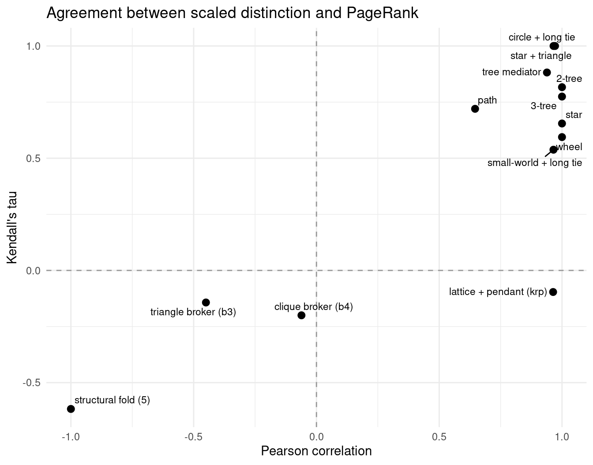
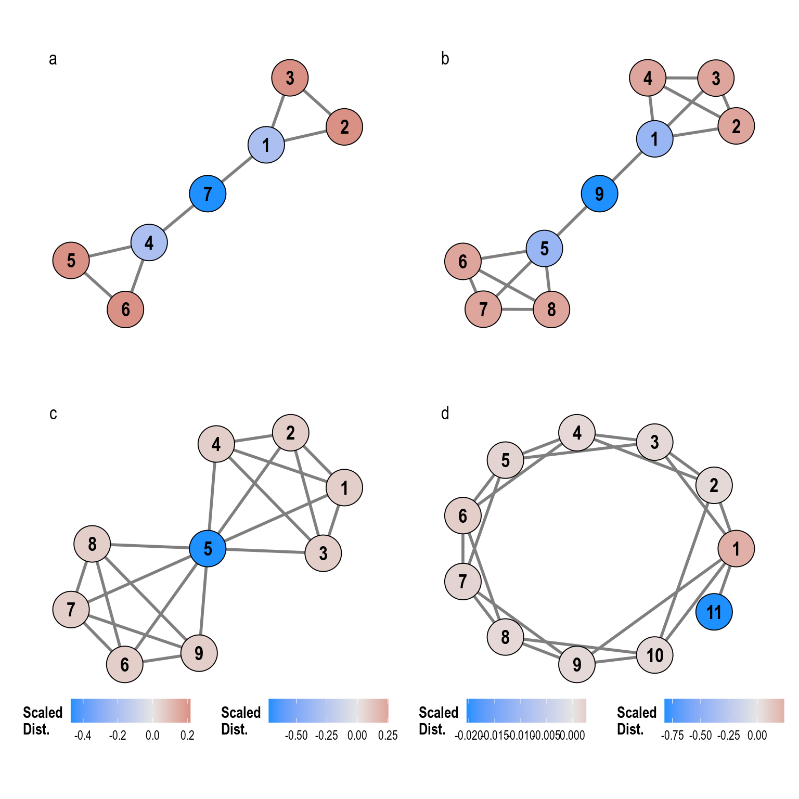

Distinction centrality (\(\beta_i\)) trades status (\(s_i\), eigenvector centrality) against constraint (\(\kappa_i\), the mean status of a node’s neighbors in the node-deleted subgraph), with the scalar \(\alpha = \bar{\kappa}/\bar{s}\) putting the two on a common scale. PageRank, by contrast, rewards being connected to well-connected neighbors, and its random surfer has no interest in what remains of the network once a focal node is deleted. The two measures can therefore agree strongly on ordinary networks while disagreeing sharply exactly where the theory of agonistic competition predicts disagreement: nodes whose neighborhoods are held together by their own presence.
This report compares scaled distinction (scd) with undirected PageRank across the empirical networks in Data/ and the toy-graph registry, asking where the measures converge and where they part ways.
Code
# Correlations between scaled distinction and PageRank for one graphcompare_pr <-function(g, label) { dd <-distinction(g, norm ="abm") pr <-page_rank(g, directed =FALSE)$vectortibble(network = label,n =vcount(g),pearson =cor(dd$scd, pr, method ="pearson"),spearman =cor(dd$scd, pr, method ="spearman"),kendall =cor(dd$scd, pr, method ="kendall") )}
# A tibble: 3 × 5
network n pearson spearman kendall
<chr> <dbl> <dbl> <dbl> <dbl>
1 Medici (full, 33 families) 33 0.576 0.855 0.680
2 Medici (largest component, 28) 28 0.892 0.958 0.838
3 Karate club 34 0.948 0.980 0.907
The two empirical networks sit at opposite ends of the agreement spectrum, and the Medici network shows how much small components can distort the comparison. In the karate club, where there is no architectural tension between status and constraint, scaled distinction and PageRank are nearly interchangeable (Pearson 0.95, Spearman 0.98). On the full 33-family Medici edge list the association looks weak (Pearson 0.58), but most of that weakness lives in the disconnected dyads and small triangles, where the jackknife normalizes status locally and manufactures rank differences that have nothing to do with agonistic structure. Restricted to the largest component of 28 families, the two measures agree closely (Pearson 0.89, Spearman 0.96, Kendall 0.84), and the residual disagreement concentrates in exactly the places the theory points to, as the node-level comparison below shows.
The toy-graph registry
The toy graphs make the mechanism visible. Cliques, circles, and regular lattices return no comparison at all: every node is structurally equivalent, distinction is constant, and no ordering exists to correlate. Away from those degenerate cases, the pattern is systematic.
library(ggplot2)library(ggrepel)ggplot(toys, aes(x = pearson, y = kendall)) +geom_hline(yintercept =0, linetype ="dashed", color ="grey60") +geom_vline(xintercept =0, linetype ="dashed", color ="grey60") +geom_point(size =2.5) +geom_text_repel(aes(label = network), size =3, max.overlaps =20) +labs(x ="Pearson correlation", y ="Kendall's tau",title ="Agreement between scaled distinction and PageRank") +theme_minimal()

Agreement is high for trees, circles with long ties, star-plus-triangle variants, and small-world networks, with Kendall’s tau ranging from about 0.45 to 1.00. The failures concentrate where theory says they should.
Where the measures part ways
Three structural situations drive the disagreement, and each one is diagnostic rather than incidental.
Code
library(ggraph)library(patchwork)source(here::here("Functions", "plot.graph.norm.R"))p_b3 <-plot.graph.norm(b3, l ="kk") +labs(tag ="a")p_b4 <-plot.graph.norm(b4, l ="kk") +labs(tag ="b")p_sf5 <-plot.graph.norm(sf5, l ="kk") +labs(tag ="c")p_krp <-plot.graph.norm(krp, l ="circle") +labs(tag ="d")(p_b3 | p_b4) / (p_sf5 | p_krp) +plot_layout(guides ="collect") &theme(legend.position ="bottom", legend.title =element_text(face ="bold"))

The four toy networks where the measures disagree most, colored by scaled distinction (blue low, red high). In each, the node that distinction penalizes is the one PageRank rewards.
In the two clique-broker graphs, the broker node sits between cliques and has the lowest distinction, but PageRank does not place it at the top either; Kendall’s tau is mildly negative (\(-0.14\) for the triangle broker, \(-0.20\) for the clique broker) because the two measures disagree about the ordering of the clique members relative to the broker.
The structural fold is the sharpest case. Node 5, the hinge between the two cliques in the five-clique fold, simultaneously has the highest PageRank in the graph and the lowest distinction. PageRank reads it as the best-connected position; distinction reads it as the most constrained. This is not a numerical accident but the conceptual disagreement between the two measures rendered as a single node.
Finally, the lattice with a pendant (krp) produces Kendall’s tau near zero: the pendant and the lattice nodes are ordered almost arbitrarily by the two measures, because distinction is nearly constant across the regular lattice while PageRank is pulled around by the pendant’s single tie.
Which Medici nodes disagree?
Because the Medici edge list contains several small components (dyads and a small triangle) alongside the main marriage network, the node-level comparison below restricts attention to the largest connected component of 28 families. Small components get their own local normalizations in the jackknife and would otherwise manufacture spurious rank gaps.
Ranking every family in the main component by scaled distinction and by PageRank and taking the difference exposes exactly which nodes carry the two measures’ disagreement. The table below shows the largest gaps, positive meaning distinction ranks the family far higher than PageRank does (a constrained position PageRank undervalues), negative meaning the reverse.
Medici families in the largest component with the largest rank gaps between distinction and PageRank.
family
scd
pagerank
rank_scd
rank_pr
gap
Da Uzzano
-0.130
0.030
21
15
6
Valori
-0.088
0.019
16
21
-5
Ginori
0.022
0.048
12
7
5
Medici
0.163
0.074
7
3
4
Dal’Antella
-0.093
0.019
17
20
-3
Benizzi
0.036
0.036
8
11
-3
The main finding is how little disagreement the main component contains once the small components are gone. The largest gap is six places (Da Uzzano), and most families agree within two or three positions. The elite core almost fully converges: Peruzzi and Albizzi hold the top two spots under both measures, and the Medici family’s four-place drop (7th under distinction against 3rd under PageRank) is the only large disagreement among the magnates, still reflecting the same mechanism of a neighborhood that survives its deletion. Distinction’s remaining promotions over PageRank — Da Uzzano and Ginori — are mid-tier positions whose deletion would strand neighbors, while Valori is the largest case in the other direction, a single-tie house that PageRank undervalues less than distinction does.
The largest component of the Medici network colored by the rank gap between scaled distinction and PageRank (positive red means distinction ranks the family higher; negative blue means PageRank does).
Reading the main component through the gap shows a mostly washed-out map. The warm spots concentrate around Da Uzzano and Ginori in the center, with the Medici node itself lightly red at the heart of the graph, while the blue fringe of Valori and Dietisalvi marks single-tie positions whose PageRank exceeds anything their deletion could cost. Where the earlier full-network comparison showed deep blue islands of distinction-promoted dyads, the connected network agrees with itself: disagreement here is a matter of a few places, concentrated on mid-tier houses, not a structural chasm.
Interpretation
The comparison shows that distinction centrality is not a monotone re-ranking of PageRank. The two agree when constraint is low and diffuse, as in the karate club and the tree-like toy graphs. They diverge exactly at the positions Bourdieu’s theory singles out: bridges and brokers whose social capital depends on their remaining in place. PageRank treats the structural fold’s hinge as the network’s most valuable node; distinction treats it as the network’s most dependent. A random surfer and an agonistic competitor look at the same node and reach opposite conclusions, which is the point of the metric.